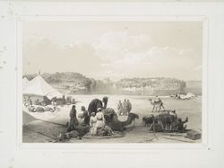
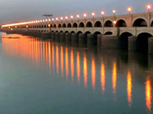
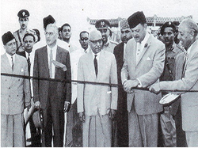

History of Sukhur
Sukkur has been an important strategic centre and trading route from time immemorial. Alor (present Aror, Sukkur) held the status of capital under the reign of Musikanos, when Alexander invaded India in 326 BCE. The ruins of this ancient town still exist, 8 km east of Rohri, in Sukkur district. In 711 CE, Arab invaded Sindh, led by 17 years old Muhammad Bin Qasim, and Sukkur (including whole Sindh and lower Punjab) became part of Umayyad Caliphate. Later Mughals and many semi-autonomous tribes ruled over Sukkur. The city was ceded to Mirs of Khairpur between 1809 and 1824. In 1833, Shah Shuja (a warlord of Kandahar, Afghanistan) defeated the Talpurs near Sukkur and later made a solemn treaty with the Talpur ruler, by which he relinquished all claims on Sindh. In 1843, the British (General Charles James Napier) defeated the Talpurs at the battle of Miani and Dubbo near Hyderabad and ruled the Sukkur (including Sindh) until independence of Pakistan. The (current) district of Sukkur was constituted in 1901 out of part of Shikarpur District, the remainder of which was formed into the Larkana District. Sukkur saw a significant socio-economic uplift after 1930s, when British Raj built the world largest barrage here on Indus River. After independence of Pakistan, thousands of Muslim immigrants arrived in Sukkur while a much larger number of Hindus left for India. Sukkur is the central city of Sind province, It is located on the west bank of the River Indus. The city is the starting point for all the archeological sites in Sind. There is also a small but very busy central Bazaar in the city which attracts people from all over the Sind province. The best thing to buy is Dates which are really a good gift from here. One can also hunt for colorful handicrafts and Ajraks here. Sukkur is also the narrowest point of the lower Indus. Hence it was here English made first barrage on the Indus in 1932. (Lloyd Barrage) 7 Canals were dig to distribute water in all parts of the province which eventually made Pakistan to have the longest irrigation system of the world. With 38000 miles of irrigation canals known as Indus Food System.
Visit Places of Sukkur:
Visit : Ghanta Ghar (Clock Tower) Bazaar should be your starting point where the best part of bazaar is. Later you can visit Masoom Shah Jo Munaro (Menarat of Masoom Shah) which is at a walking distance and if you have energy to climb 84 narrow steps there is a spectacular view of the River Indus and its two bridges. Minaret was built by Historian and knight Masoom Shah in 18th century Later drive to The Lloyd Barrage and Lansdowne bridge . At Lloyd barrage there is also a small barrage Museum which explains the barrage system and some interesting facts of the river Indus irrigation system. Near Lansdowne Bridge also visit the "Sat Bahan Astan" A small graveyard from 15th to 17th century has beautifully decorated tombs with blue Glazed tiles.
Temples of Sukkur
At a short distance from Sukkur There are few temples of Hindus which are of the Kali Mata & Durga. It is said that Kali when traveling to Hinglag (Baluchistan ) stayed here. Many Hindus come for a pilgrimage (Teerath ) and go through a dark cave to perform their ritual The people here are very friendly and it can be really interesting to see how rituals are performed here. On the way to the caves you can also stop at Ganjo Takar a small temple on top of a gigantic bolder if you want to test your rock climbing skills this is perfect When I went there I saw there was no statue and on top it was written (He hane Masjid AAhe) {This is a Mosque Now)!!!
  Old Sukhur in Sindh (Now in pakistan)
Originally Sukkur, Rohri and Bukher were all connected by land. A great earthquake during the 11th century changed the course of the river Indus from Arror to a different side of Rohri, with the result that the land, which connected Sukkur, Rohri and Bukher, was divided into three parts and the river flowed in between. Sukkur was on one side, Rohri on the other and Bukher was in between. There are various versions as to how Sukkur was given its name. The popular version is that there were fields of Sugarcane and Sugar factories in the vicinity of Sukkur. So Sukkur seems to be the distorted version of the word ‘Shaker’ which means ‘Sugar’. There is another version, which seems to be more authentic and convincing, thats because there was plenty to eat and plenty to enjoy, things were inexpensive and people at large were comfortable and happy. The word Sukkur seems to have been derived from the word ‘Sukh’ which means Comfort. Sukkur was the third most important town of SINDH . It was an important commercial and industrial centre of upper Sindh. It is said that Sukkur became a very important Ship building port and two ships were built one in the year 1835 named Indus and the other in the year 1843 named Satellite. Sukkur assumed great importance in business, trade and other activities especially after the conquest of Sindh by the British in 1848. Sukkur gained further importance after the construction of the famous Sukkur Barrage ( Dam ) on the river Indus making Sindh the granary of India.